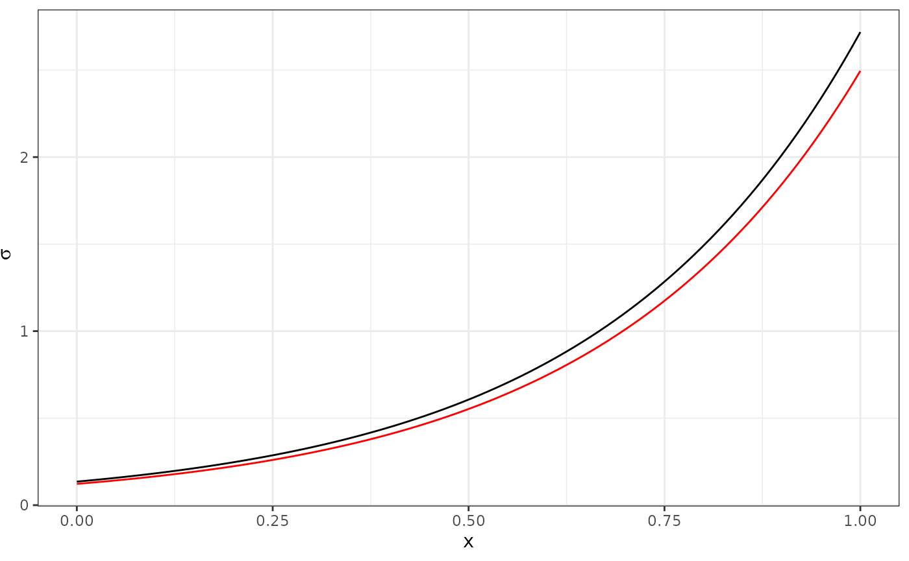

A version control repository is a place where files under
the control of a version control system, such as git, are
kept track of over time. This lab includes the initial steps for
accessing git repositories.
In this lab session you will explore optimisation methods, and practice writing R functions that can be supplied to the standard optimisation routine in R, in order to perform numerical parameter estimation. You will not hand in anything, but you should keep your code script file for later use.
Note: This lab sheet contains supplementary course notes about optimisation and the R language.
Working with git/github/RStudio
Initial authentication setup
If you’re working on rstudio.cloud, first click on your
name in the top right corner and go to Authentication.
Activate github access, including “Private repo access also enabled”.
You should be redirected to authenticate yourself with github. (Without
this step, creating a new project from a github repository becomes more
complicated.)
If you’re working on a local computer, see sections Personal access token
for HTTPS (Personal Access Tokens, as used in week 1, see Technical
Setup on Learn) and Set up keys for SSH
(if you’re already using ssh keys, these can be used with github) at happygitwithr.com has useful
information for setting up the system. The simplest approach is to set
the GITHUB_PAT in the .Renviron file with
usethis::edit_r_environ()., but some of the other methods
are more secure. The procedure is similar to the setup for
rstudio.cloud Projects, but for local computer setup it can
be done globally for all R projects.
Creating a new RStudio Project from github
The Section Connect to GitHub explains how to create new repositories on github, and how to access them. For this tutorial, a repository has already been created for you in the StatComp21 organisation, so only the “clone” and “Make a local change, commit, and push” steps will be needed.
After setting up the initial github authentication, follow these steps:
- Go to github.com/StatComp21
- You should see a Repository called
lab02-username where “username” is your github username. (If not, you may not have been connected to the course github in time for your repostitory to be created; contact the course organizer.) - Click on the repository to see what it contains. Use the “Code” button to copy the HTTPS version of the URL that can be used to create a “Clone”.
- On rstudio.cloud: go to the
Statistical Computing workspace.
Create a “New Project”-“from Git Repository” based on the URL to your git repository - On a local R/RStudio installation: opening RStudio, and then
choosing “File -> New Project -> Version Control -> Git”
Make sure to place the repository in a suitable location on your local disk, and avoid blank spaces and special characters in the path.
- In the project, open the file
lab02_code.R, and use it to hold the code for this lab. During the lab, remember to save the script file regularly, to avoid losing any work. You will also use git to synchronise the file contents with the github repository.
Note: If you’re on rstudio.cloud, some version of
StatCompLab package will already be installed, but running
remotes::install_github("finnlindgren/StatCompLab") will
ensure that you have the latest version. On your local computer, you
will also need to run
remotes::install_github("finnlindgren/StatCompLab") to
install and upgrade the package.
The remotes::install_github syntax means that R will use
the function install_github from the package
remotes, without having to load all the functions into the
global environment, as would be done with
library("remotes"). In some cases,
R/RStudio will detect that some related
packages have newer versions, and ask if you want it to first upgrade
those packages; it is generally safe to accept such upgrades from the
CRAN repository, but from other sources, including github,
you can decline such updates unless you know that you need a development
version of a package.
In addition to the lab and tutorial documents, the
StatCompLab package includes a graphical interactive tool
for exploring optimisation methods, based on the R interactive
shiny system.
Further authentication setup
If you’re using a local installation, you can skip this step if you’ve already setup your github credentials.
After cloning the repository to rstudio.cloud, you need
to setup authentication within the project (the same method can be used
when initially setting up authentication on your own computer, but there
you have more options, such as SSH public key authentication, see happygitwithr.com):
- On github.com/StatComp21, go to your own user (icon in the top right corner) “Settings”->“Developer settings”->“Personal access tokens”
- Create a new token (a “PAT”), with the “repo” access option enabled. Copy the generated string to safe place
- In your RStudio project
Consolepane, runcredentials::set_github_pat()to add the new token - In the
Terminalpane, run
git config --global credential.helper "cache --timeout=10000000"which sets a cache timeout of a bit over 16 weeks before it should need you to authenticate in this project again.
You will need to go through this procedure for each
rstudio.cloud git project you create in the future. (If you
store the PAT in a safe place you can reuse it for all the projects, but
it’s safer to only use it once, and delete the copy after running
set_github_pat())
Use credentials::credential_helper_get(),
..._list() and ..._set() to control what
method is used to store the authentication information. On your own
computer, you can set it to a method (usually called “store”) that
stores the information permanently instead of just caching it for a
limited time.
Basic git usage
The basic git operations, clone,
add, commit, push, and
pull
- The process used to copy a git repository from github to either
rstudio.cloudor your local machine is to create aclone; Initially, the cloned repository is identical to the original, but local changes can be made. -
addandcommit: When changes to one or several files are “done”, we need to tellgitto collect the changes and store them. Withgit, one needs to first tell it which file changes to add (called staging in git), and then to commit the changes. -
push: When we’re happy with our local changes and want to make them available either to ourselves on a different computer, or to others with access to the github copy of the repository, we push the commits. -
pull: To get access to changes made in the github repository, we can pull the commits that were made there since the last time we either cloned or pulled.
Task:
- Open the
lab02_code.Rfile and add a line containinglibrary(StatCompLab) - Save the file
- In the
Gitpane, pressCommitand select the changed file (a tick mark should appear indicating the file as being Staged, and the display also shows what has changed; this can also be done before pressing Commit) - Enter an informative “Commit message”, e.g. “Load StatCompLab”
- Press “Commit”, and it should soon indicate success
- Press “Push” to push the changes to github, and, if asked, enter your github login credentials
- Go to the repository on github (https://github.com/StatComp21/)
and click the
lab02_code.Rthere to see that your change has been included
Optimisation exploration
The optimisation methods discussed in the lecture (Gradient Descent, Newton and the Quasi-Newton method BFGS, see Lecture 2) are all based on starting from a current best estimate of a minimum, finding a search direction, and then performing a line search to find a new, better, estimate. The Nelder-Mead Simplex method works in a similar way, but doesn’t use any derivatives of the target function; it only uses function evaluations, and keeps track of a set of local points ( points, if is the dimension of the problem). For 2D problems the method updates a triangle of points. In each iteration, it attempts to move away from the “worst” point, by performing a simple line search. In addition to the basis line search, it will reduce or expand the triangle. Expansion happens similarly to the adaptive step length in the Gradient Descent method.
Start the optimisation shiny app from the code
Console:
StatCompLab::optimisation()- For the “Simple (1D)” and “Simple (2D)” functions, familiarise yourself with the “Step”, “Converge”, and “Reset” buttons. Choose different optimisation starting points by clicking in the figure.
- Explore the different optimisation methods and what they display in the figure for each optimisation step.
- The simplex/triangle shapes are shown for each “Simplex” method step in blue. The “best” points for each simplex are connected (magenta).
- The Newton methods display the true quadratic Taylor approximations (contours in red) as well as the approximations used to find the proposed steps (contours in blue).
- Also observe the diagnostic output box and how the number of function, gradient, and Hessian evaluations differ between the methods.
- For the “Rosenbrock (2D)” function, observe the differences in convergence behaviour for the four different optimisation methods.
- For
-dimensional
problems and derivatives approximated by finite differences, a gradient
calculation
costs at least extra function evaluations, and a Hessian costs at least extra function evaluations. For the 2D Rosenbrock function, count the total number of function evaluations required by each optimisation method (under the assumption that finite differences were used for the gradient and Hessian) until convergence is reached.
Hint: find the “Evaluations:” information in the app. You may need to use the “Converge” button multiple times, since it will only do at most 500 iterations each time.
Also note the total number of iterations needed by each method. How do they compare?
Answer:
,
so the number of function evaluations is given by
#f + 2 * #gradient + 8 * #hessian (2 extra function
evaluations are needed for first order differences for the gradient, and
8 extra points are needed for the second order differences needed for
the second order derivatives; we’ll revisit this in week 9)
- Nelder-Mead: (103 iterations)
- Gradient Descent: (9404 iterations)
- Newton: (22 iterations)
- BFGS: (40 iterations)
BFGS uses the smallest number of function evaluations, which makes it faster than the more “exact” Newton method, despite needing almost twice as many iterations. Thus, we would normally only consider using the full Newton method if we have a more efficient way of obtaining the Hessian than finite differences. Gradient Descent does extremely badly on this test problem; clearly, using some approximate information about the second order derivatives can provide much better search directions and step lengths than using no higher order information. The Simplex method doesn’t use higher order information, but due to its local “memory” it can still be competetive; in this test case, it outperforms the Newton method in terms of cost, but not the BFGS method.
- For the “Multimodal” functions, explore how the optimisation methods behave for different starting points.
- How far out can the optimisation start for the “Spiral” function? E.g., try the “Newton” method, starting in the top right corner of the figure.
Functions
A function in R can have a name, arguments
(parameters), and a return value. A function
is defined through
thename <- function(arguments) {
expressions
}where expressions is one or more lines of code. The
result of the last evaluated expression in the function is the value
returned to the caller.
Each input parameter can have a default value, so that the
caller doesn’t have to specify it unless they want a different value.
Sometimes, a NULL default value is used, and the parameter
checked internally with is.null(parameter) to determine if
the user supplied something.
It is good practice to refer to the parameters by name when calling a function (instead of relying on the order of the parameters; the first parameter is a common exception to this practice), especially for parameters that have default values. Example:
my_function <- function(param1, param2 = NULL, param3 = 4) {
# 'if': run a block of code if a logical statement is true
if (is.null(param2)) {
param1 + param3
} else {
# 'else', companion to 'if':
# run this other code if the logical statement wasn't true
param1 + param2 / param3
}
}
my_function(1)## [1] 5
my_function(1, param3 = 2)## [1] 3
my_function(1, param2 = 8, param3 = 2)## [1] 5
my_function(1, param2 = 8)## [1] 3The main optimisation function in R is optim(), which
has the following call syntax:
optim(par, fn, gr = NULL, ...,
method = c("Nelder-Mead", "BFGS", "CG", "L-BFGS-B", "SANN",
"Brent"),
lower = -Inf, upper = Inf,
control = list(), hessian = FALSE)Here, the method parameter appears to have a whole
vector as its default value. However, this is merely a way to show the
user all the permitted values. If the user does not supply anything
specific, the first value, "Nelder-Mead" will be used. Read
the documentation with ?optim to see what the different
arguments mean and how they can be used.
You may have briefly encountered the special ...
parameter syntax in an earlier lab. It means that there may be
additional parameters specified here by the caller, that should be
passed on to another function that is called internally. For
optim(), those extra parameters are passed on to the target
function that the user supplies. A call to optim() to
minimise the function defined by myTargetFunction() might
take this form:
opt <- optim(par = start_par,
fn = myTargetFunction,
extra1 = value1,
extra2 = value2)When optim() uses the function
myTargetFunction(), it will be called like this:
myTargetFunction(current_par, extra1 = value1, extra2 = value2)Estimating a complicated model
As an example, we’ll look at a model for the connection between some values and observations (see Lecture 2) that can be written
Use the following code to simulate synthetic random data from this model, where both the mean and standard deviation of each observation depends on two model parameters via a common set of covariates.
n <- 100
theta_true <- c(2, -2, -2, 3)
X <- cbind(1, seq(0, 1, length.out = n))
y <- rnorm(n = n,
mean = X %*% theta_true[1:2],
sd = exp(X %*% theta_true[3:4]))Plot the data.
library(ggplot2)
theme_set(theme_bw())
ggplot(data.frame(x = X[, 2], y = y)) +
geom_point(aes(x, y))Write a function
neg_log_lik <- function(theta, y, X) {(Code goes
here)} that evaluates the negative log-likelihood for the
model. See ?dnorm.
With the aid of the help text for optim(), find the
maximum likelihood parameter estimates for our statistical model using
the BFGS method with numerical derivatives. Use
as the starting point for the optimisation.
Check the ?optim help text for information about what
the result object contains. Did the optimisation converge?
Compute and store the estimated expectations and values like this:
data <- data.frame(x = X[, 2],
y = y,
expectation_true = X %*% theta_true[1:2],
sigma_true = exp(X %*% theta_true[3:4]),
expectation_est = X %*% opt$par[1:2],
sigma_est = exp(X %*% opt$par[3:4]))The estimates of as a function of should look similar to this:
ggplot(data) +
geom_line(aes(x, sigma_true)) +
geom_line(aes(x, sigma_est), col = "red") +
xlab("x") +
ylab(expression(sigma))
The expression(sigma) y-axis label is a way of making R
try to interpret an R expression and format it more like a mathematical
expression, with greek letters, etc. For example,
ylab(expression(theta[3] + x[i] * theta[4])) would be
formatted as
.
Data wrangling
To help ggplot produce proper figure labels, we can use
data wrangling methods from a set of R packages commonly referred to as
the tidyverse. The idea is to convert our data frame that
has each type of output as separate data columns into a format where the
values of the true and estimated expectations and standard deviations
are stored in a single column, and other, new columns encode what each
row contains.
suppressPackageStartupMessages(library(tidyverse))
data_long <-
data %>%
pivot_longer(cols = -c(x, y),
values_to = "value",
names_to = c("property", "type"),
names_pattern = "(.*)_(.*)")
data_long## # A tibble: 400 × 5
## x y property type value
## <dbl> <dbl> <chr> <chr> <dbl>
## 1 0 1.92 expectation true 2
## 2 0 1.92 sigma true 0.135
## 3 0 1.92 expectation est 2.01
## 4 0 1.92 sigma est 0.122
## 5 0.0101 1.95 expectation true 1.98
## 6 0.0101 1.95 sigma true 0.139
## 7 0.0101 1.95 expectation est 1.99
## 8 0.0101 1.95 sigma est 0.126
## 9 0.0202 2.18 expectation true 1.96
## 10 0.0202 2.18 sigma true 0.144
## # ℹ 390 more rowsHere, we collected all the true and estimated expectations and
standard deviations into a single column value, and
introduced new columns property and type,
containing strings (characters) indicating “expectation”/“sigma” and
“est”/“true”. Take a look at the original and new data and
data_long objects to see how they differ.
We can now plot all the results with a single ggplot
call:
The function facet_wrap splits the plot in two parts;
one based on the data for all data_long rows where
property is “expectation”, and one based on the data for
all data_long rows where property is “sigma”.
The colour is chosed based on type, as shown in a common
legend for the whole plot.
- Rerun the optimisation with the extra parameter
hessian = TRUE, to obtain a numeric approximation to the Hessian of the target function at the optimum, and compute its inverse (see?solve), which is an estimate of the covariance matrix for the error of the parameter estimates. In a future Computer Lab we will use this to evaluate approximate confidence and prediction intervals.